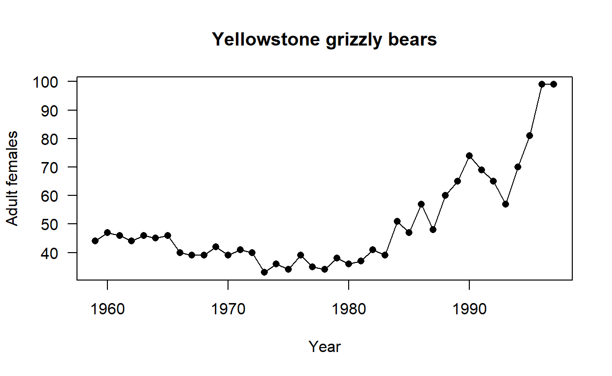
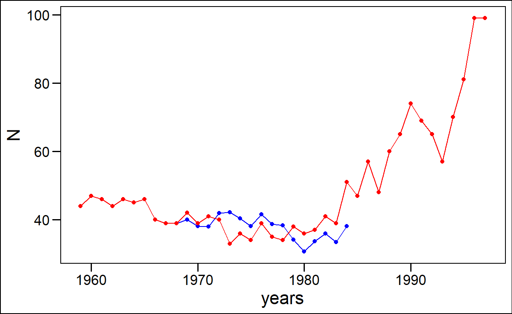

I get this error when I try and knit: Duplicate chunk label ‘correction’, which has been used for the chunk:
Each chunk needs a unique name (but great that you learnt to name them!)
Bear population challenge
Apply your knowledge about population models to this grizzly bear dataset. Answer the questions and show your code (either in a new script file or in a new Rmarkdown file - you can adapt the original). Save the file and send it to me.
# a # sign means that R does not read this as code.
#install.packages("popbio") #remove the first hash if you do not have popbio installed as a package
library(popbio)Upload and explore the bears dataset
I get an error here because I have an object called N already. To avoid this in the future I need to change your plot code to call the title of the column from the data. So grizzly\(year, grizzly\)N
data(grizzly)
View(grizzly)
#?grizzly# what is the grizzly data about?
attach(grizzly) ## You need to attach the data so that
#you can use it in the functions that follow
#(otherwise you need to signal to R which data you are using)
plot(grizzly$year, grizzly$N, type='o', pch=16, las=1, xlab="Year",
ylab="Adult females", main="Yellowstone grizzly bears") 
What is the grizzly data set all about
Look up the grizzly dataset from the R help (see above ?grizzly will search for the dataset in the helpfiles).
Provide a summary of the grizzly dataset
summary(grizzly)
year N
Min. :1959 Min. :33.00
1st Qu.:1968 1st Qu.:39.00
Median :1978 Median :44.00
Mean :1978 Mean :49.79
3rd Qu.:1988 3rd Qu.:57.00
Max. :1997 Max. :99.00 There are lots of other packages you could use to make a summary for example this makes a summary output (better for more complex data frames):
#install.packages("summarytools")
library(summarytools)
view(summarytools::dfSummary(grizzly))Calculate the rate of population change
Their are only female bears in this count. What could you do to make this data more representative of the population?
Do we need more data than just female bears?
You need to answer these questions
#calcualte log(Nt+1/Nt)
nt <- length(grizzly$N) ## number transitions
logN <- log(grizzly$N[-1] / grizzly$N[-nt])
## Mean and var
c(mean = mean(logN), var = var(logN))
mean var
0.02134027 0.01305092
###
x <- sqrt(grizzly$year[-1] - grizzly$year[-length(grizzly$year)])
y <- logN / x
mod <- lm(y ~ 0 + x)
summary(mod)
Call:
lm(formula = y ~ 0 + x)
Residuals:
Min 1Q Median 3Q Max
-0.21371 -0.07773 -0.02134 0.07740 0.24692
Coefficients:
Estimate Std. Error t value Pr(>|t|)
x 0.02134 0.01853 1.152 0.257
Residual standard error: 0.1142 on 37 degrees of freedom
Multiple R-squared: 0.0346, Adjusted R-squared: 0.008506
F-statistic: 1.326 on 1 and 37 DF, p-value: 0.2569
N0<-44
r.mean<-0.02
r.sd<-0.02
T<-39
r<-rnorm(T,r.mean,r.sd)
plot(density(r))+
abline(v=r.mean,col="blue")+
abline(v=r.mean+r.sd,col="blue",lty=2)+
abline(v=r.mean-r.sd,col="blue",lty=2)
integer(0)
###
t<-N<-array(dim=T+1)
#first element is initial value
N[1]<-N0
t[1]<-0
for (i in 1:T)
{
N[i+1]<-N[i]*exp(r[i])
t[i+1]=t[i]+1
}
data.frame(t=t,N=N)
t N
1 0 44.00000
2 1 43.73069
3 2 44.53104
4 3 45.82638
5 4 46.80921
6 5 47.60440
7 6 49.81397
8 7 51.08673
9 8 51.53990
10 9 51.76297
11 10 51.49506
12 11 52.45464
13 12 52.52737
14 13 54.58491
15 14 57.66296
16 15 56.71159
17 16 58.58592
18 17 58.02804
19 18 57.89591
20 19 60.69637
21 20 63.11822
22 21 63.57655
23 22 65.37834
24 23 65.93880
25 24 68.82788
26 25 70.17217
27 26 70.70281
28 27 72.43476
29 28 73.76768
30 29 75.47855
31 30 79.83126
32 31 82.17601
33 32 83.98263
34 33 84.96941
35 34 85.47295
36 35 87.22095
37 36 86.99181
38 37 85.25631
39 38 82.63925
40 39 86.48622
plot(t,N,type="l")
grizzly[1:10,]
year N
1 1959 44
2 1960 47
3 1961 46
4 1962 44
5 1963 46
6 1964 45
7 1965 46
8 1966 40
9 1967 39
10 1968 39
lam<-c(rep("NA",9))
for (i in 1:10)
{
lam[i]<-grizzly$N[i+1]/grizzly$N[i]
}
lam
[1] "1.06818181818182" "0.978723404255319" "0.956521739130435"
[4] "1.04545454545455" "0.978260869565217" "1.02222222222222"
[7] "0.869565217391304" "0.975" "1"
[10] "1.07692307692308" Use the population models to assess the population change in bears
Make use of only the first 10 years of the bears dataset to predict the future 17 years. Plot this on the same graph (hint in base R you can add points to a plot using the “points()” fuction)
N0<-44
r.mean<-0.01
r.sd<-0.02
T<-17
r<-rnorm(T,r.mean,r.sd)
plot(density(r))+
abline(v=r.mean,col="blue")+
abline(v=r.mean+r.sd,col="blue",lty=2)+
abline(v=r.mean-r.sd,col="blue",lty=2)
integer(0)
mean<-mean(as.numeric(lam),na.rm = TRUE)
std<-sd(as.numeric(lam),na.rm = TRUE)
dim(grizzly)
[1] 39 2
N=NULL
N[1]=grizzly$N[10]
for (i in 1:16)
{
N[i+1]<-rnorm(1, mean, std)*N[i]
}
N
[1] 39.00000 39.99065 38.10268 38.01058 41.94474 42.11304 40.37521
[8] 38.08004 41.53958 38.72084 38.28466 34.14076 30.63334 33.71959
[15] 35.98163 33.47907 38.09920
library(tidyverse)
bears<-data.frame(N=N, years=grizzly$year[10:26])
bears %>%
ggplot(aes(years,N))+
geom_point(col="blue")+
geom_line(col="blue")+
geom_point(data=grizzly,aes(year,N),colour="red")+
geom_line(data=grizzly,aes(year,N),colour="red")+
ggthemes::theme_base()
#Extra credit:: Make the plots look pretty (look at ?ggplot2 for example and search on Google for ggplot2)
Great!
detach(grizzly)# remember to detach the data from the session
rm(list=ls())# this cleans your environment - is useful but
#you might want to keep it sometimes - use caution